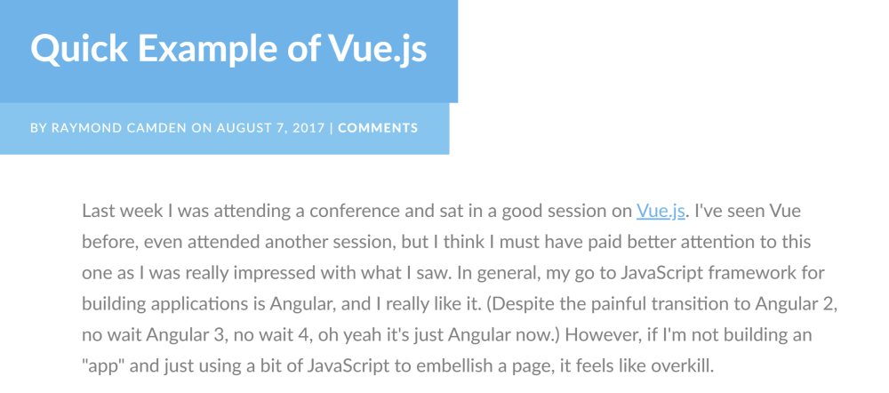
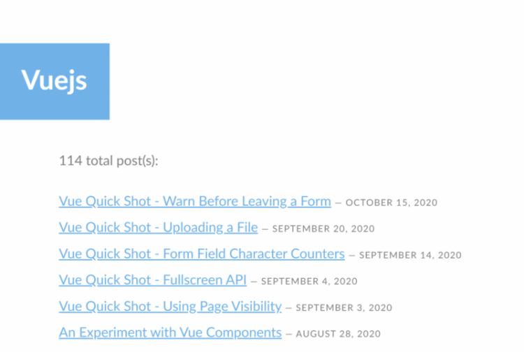
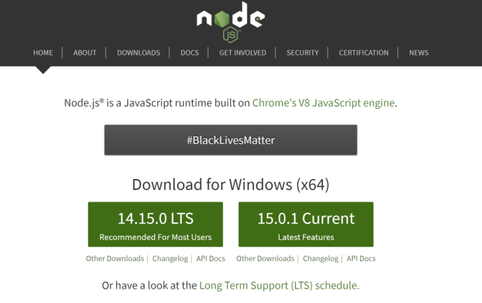

Second best "Just Dance 2019" player (in my house)
Blogging at raymondcamden.com
Tweeting @raymondcamden
I am...
Web developer (20+ years)
I'm almost good
My JavaScript skill level is look it up at MDN to see if it mutates the original value or returns a new one
I (almost) used reduce() without checking the docs!
A Vue.js developer!
It started well...

Things got out of control...

"Vue is a progressive framework for building user interfaces. Unlike other monolithic frameworks, Vue is designed from
the ground up to be incrementally adoptable.
The core library is focused on the view layer only, and is easy to pick up and integrate with other libraries or
existing projects."
Vue as a PE tool
I could drop a script tag in and go
I could use CodePen
No build process!
A better (for me!) jQuery
Yes and...
"On the other hand, Vue is also perfectly capable of powering sophisticated Single-Page Applications when used in
combination with modern tooling and supporting libraries."
When to build an app vs PE
How do you know when it's an app and not just PE?
Todo: Write the precise rule you can check to know when to do one vs the other
Todo: Definitely don't leave this till the day of the presentation, Ray
Todo: All of the above
You know you *may* need an app when....
Multiple screens
When you need to add code and you start seeing 4 digit line numbers
When you are working with multiple people
Projects tend to grow, not shrink
ENTER
The Vue CLI
CLI Basics
Installed via NPM (or yarn)
Scaffolds application
Lets you add features
Serves a visual UI for managing your app
Prototyping
WTF is NPM?
Node Package Manager
A versatile way to install things
Node developers use it, but you don't need to care about that
Install Node
nodejs.org

Install
npm install -g @vue/cli
Scaffolding
You begin with a name
CLI will ask you some questions
You get some* files
"Some" being a number between less than infinity and infinity